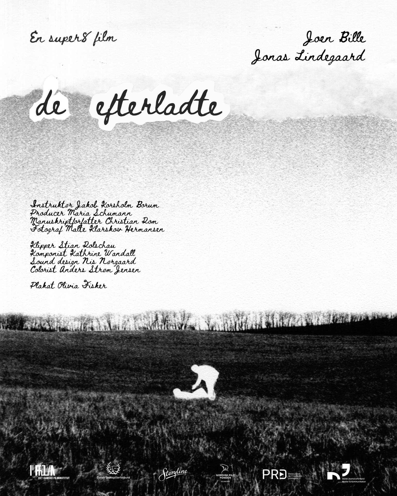
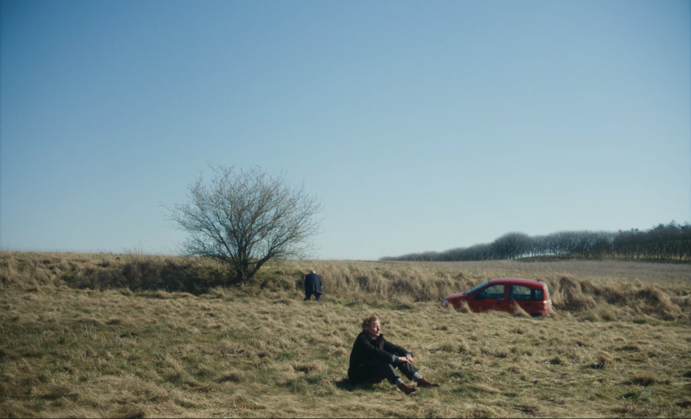
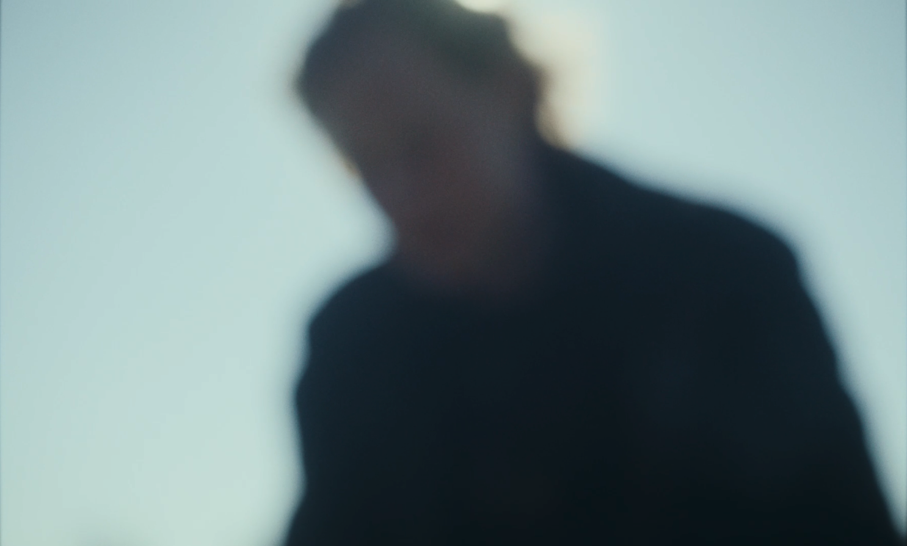

De Efterladte (2025)
Fiction / Short / SUPER8
Director: Jakob Korsholm Borum / Editor: Stian Rolschau
Producer: Maria Schumann / DOP: Malte Klarskov Hermansen / Writer: Christian Rom
Sound Design: Nis Nørgaard / Composer: Kathrine Wandall / Colorist: Anders Strøm Jensen

